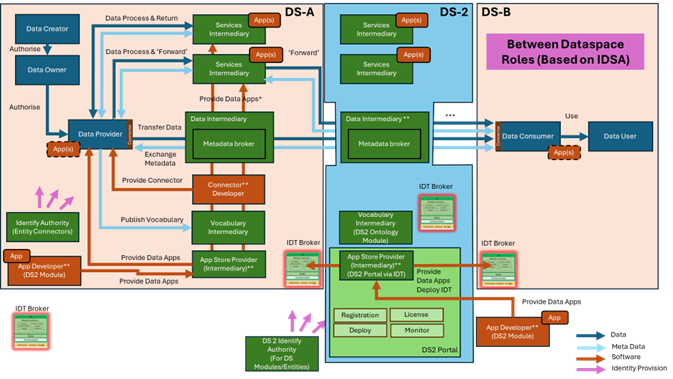

CAT
Use the table below as an example and replace with the links to the module's DS2 GitHub repository and GitHub project.
| Project Links |
|---|
| Software GitHub Repository https://github.com/ds2-eu/cat.git |
| Progress GitHub Project https://github.com/orgs/ds2-eu/projects/38 |
General Description
Paste in here the Introduction section from your module's architecture document Purpose and Description.
Architecture
Leave the following text referencing the figures and replace the names for the corresponding images of your module. Both images can be found in your architecture document. The reference to the IDT image is left for information purpose so that you know how to add images. Please delete them once you add your image references.
The figure below represents the module fit into the DS-DS environment. 
The figure below represents the actors, internal structure, primary sub-components, primary DS2 module interfaces, and primary other interfaces of the module.

Component Definition
Paste in here the Component Definition section from the module's architecture document without the Architecture diagram, since it already in the previous section.
Screenshots
Display an animated gif with 4 representative screenshots of the module.
You can build a gif from a list of images with different utilities ie. power point and export to gif.
The idt reference is left for information.
Please delete it once you add your module reference.

Commercial Information
Table with the organisation, license nature (Open Source, Commercial ... ) and the license. Replace with the values of your module.
| Organisation (s) | License Nature | License |
|---|---|---|
| ICE | Open Source | Apache 2.0 |
Top Features
Add 8 - 12 relevant features of the module. This features are not the functionalities defined in the architecture document and GitHub project, even though some could be. This features are more like business or marketing oriented features. Please see example of the idt in the on-line doc at https://ds2-eu.github.io/documentation/modules/idt/ .
How To Install
The how to install has the following sections: requirements, software, summary of installation steps and detailed steps. In some cases, you may not have some of it, like for instance, the software section, or maybe you can't add this yet. Please leave the sections but add the text "N/A" or "To Be Done" depending on the module.
So far, the how to install will be pretty much clone repo and run docker in some cases. Maybe in some others build software and run ...
At a later stage, when idt integration is done, there will be a section for Module IDT installation.
Requirements
Add the minimum and recommended list of requirements in terms of CPU, RAM and Storage.
Software
Add a list of software utilities that form the module. This may not be necessary for most modules, but it is for the idt for instance.
Summary of installation steps
Add a summary of installation steps.
Detailed steps
Add the detailed steps of installation including screenshots or code snippets.
How To Use
Add in here the steps to use the module from the perspective of your target user. Similar to how to install, add screenshots and code snippets.
Other Information
Add in this section other information relevant to your module that you may want to add to the on-line documentation. If you don't have any, please add the following text: No other information at the moment for MODULE.
OpenAPI Specification
Add your open api specification, if you have any. The idea is to be able to include here the swagger UI, but so far just a snapshot or the yaml specification.
Additional Links
Add in here relevant links for your module. In this section we will also add the link to the module video.
Video https://youtube.com/idt